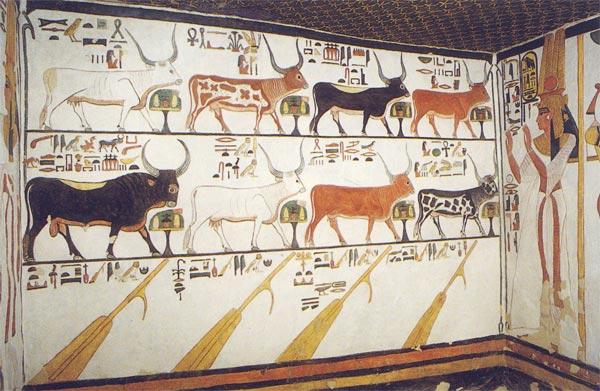
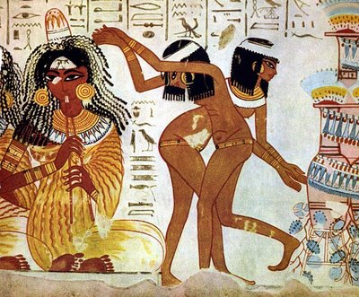

|

La religión era uno de los ámbitos más importantes en el Antiguo Egipto.
Los cargos sacerdotales se estructuraban según una jerarquía y en función de las tareas a cumplir.
Se diferenciaba entre el Alto y el Bajo clero. Cada tipo de clero servía al dios de una manera diferente.
Había cleros constituidos por médicos, como por ejemplo los sacerdotes Sekmet; o por magos, por músicos, etc.
En la mayoría de los casos el médico era a la vez mago.
No se limitaban a aplicar hierbas y ungüentos medicinales, sino que los acompañaban de invocaciones y rituales.
Pero hay que decir que dentro del grupo de los médicos había también distintas clases o tipos. Algunos no pertenecían a ningún clero específico. Había sacerdotes-médicos, magos y sacerdotes del dios Heka o sacerdotes Sau.

Otro grupo especial dentro de los médicos-magos estaba compuesto por aquellas personas que se dedicaban a sanar pero que no podían llegar a ser considerados estrictamente médicos por su condición social. Era el caso de las mujeres y de algunos hombres de clase baja.
Se servían de amuletos y fórmulas mágicas además de sus compuestos medicinales. A las mujeres se las solía asociar también con el poder o el don de la videncia.
Por lo general, la función del clero femenino consistía en deleitar al dios, cantando, bailando, tocando instrumentos musicales...
Pero algunas mujeres llegaron a alcanzar una importancia muy superior.
Había algunos santuarios encomendados a diosas como Hathor, Bastet, Neit...
Durante el Imperio Antiguo (2800-2400 a.C) encontramos a mujeres que eran “Vigilantes del Tesoro”, cargo de máxima responsabilidad.
Tenemos varios ejemplos históricos de estas mujeres:
Una hija de un noble de Beni Hasan, en la Dinastía V, fue nombrada Gran Sacerdotisa de Hathor, con el mismo cargo que hubiera obtenido un varón.
Hay que decir que en las Dinastías IV y V se apreció un culto predominantemente a Hathor.
En los templos destinados a las diosas también operaban hombres y por lo general acaparaban la dirección.
Las mujeres no estaban relegadas a las diosas, también servían a los dioses masculinos. Se las llamaba Hemet-Neter.
La nieta de Jufu (Keops) y de la reina de Merytytes profesó el sacerdocio de Thot como Sumo Sacerdote (femenino), y en el culto funerario de su madre Hetferes II. O al menos esto es lo que se desprende de las inscripciones de su tumba y de la cámara principal. Se la vistió con la piel de pantera típica del clero. Y sobre los muros hizo grabar su curriculum sacerdotal. Entre sus títulos se encuentra el de “La Que Ve a Horus y a Seth.”

A partir de la Dinastía IV las sacerdotisas eran escogidas dentro de la alta sociedad. Y se las fue encasillando poco a poco en el servicio funerario (Hemut-Ka).
Lo lógico era que el cargo se heredase.
El puesto de Sacerdotisa ofrecía compensaciones materiales como terreno cultivable y parte de las ofrendas que recibía el templo.
Taniy, otra sacerdotisa, participó en los misterios de Osiris en Abidos. 
Abidos era considerado como el territorio sagrado de Osiris. Fue un centro religioso muy importante en aquella época. En los misterios de Osiris se reproducía la muerte y resurrección del dios.
Algunas sacerdotisas se encargaban de recibir al rey, al faraón y eran las Guardianas del Santuario.
Las relaciones con el dios eran completamente místicas, no físicas. No tenían que prostituirse al servicio de la divinidad como en otras civilizaciones vecinas.
Las tareas del rango superior era la presentación de las ofrendas.
Las sacerdotisas de rango menor se encargaban de supervisar la vida cotidiana del templo en cuanto al mantenimiento del mismo.
A la cabeza de todas las clases de sacerdotisas encontraríamos a la “Directora Jefe de todo el Personal Femenino de los Templos de Alto Egipto y Nubia.”
Existía un conjunto de siete mujeres que representaban en Edfu y Dendera a las Siete Hathor, un grupo de “hadas” que encarnaban a la diosa. Mujeres que ostentaban el título de “perfectas, bellas y ensortijadas.”
Las mujeres de Buto y Busiris representaban a aquellas féminas mitológicas.

La mujer del Antiguo Egipto tenía una posición privilegiada si la comparamos con mujeres de civilizaciones de la misma época. Hombres y mujeres tenían igualdad ante la ley, podían poseer tierras, vender, heredar, legar...Algunas incluso llegaban a gobernar.
Es lógico que cuando algunas de ellas llegaban al trono como Hatshetsup, las mujeres cobraran más importancia en el sacerdocio. Pues las faraonas impulsaban a sus escogidas en la carrera sacerdotal.
Las mujeres hebreas también podrían haber participado en algunas ramas de la medicina en Egipto, como por ejemplo las parteras.
Desde el Imperio Medio (2400-1800 a.C), algunas mujeres tuvieron cargos próximos a los escribas.
Nesi Tanebet-Isheru tenía el titulo de “La que trabaja en los Rollos de papiro de Amón Ra”.
Puede que se encargara de redactar compendios del Libro de los Muertos para su familia. Otro título que ostentó tras su muerte fue “Espíritu Glorioso de Ra”. Los que habían llevado una vida heroica o ejemplar recibían veneración pública. Con ese título la difunta se asimilaba a un rayo de sol, se fundía con él y navegaba en la barca divina surcando el cielo eternamente.

La “Esposa del Dios” era la reina. Se creía que la divinidad se le presentaba bajo la apariencia del cuerpo del esposo para concebir con él el futuro faraón. La teogamia justificaba por tanto el derecho al trono.
La Esposa Divina era el mayor grado. El puesto se transformó en Divina Adoratriz de Amon-Ra.
“Mano de Dios” era un título menor al anterior. Lo ocupaban las que estaba a la Cabeza de Harén. (no hay que entender por Haren lo que ahora) Tenía que ver con las diosas que se relacionaban con el dios creador Atum. La personificación de su mano fecundaba por medio de la masturbación. En el Harén del Dios había tanto hombres como mujeres, pero no se sabe si era mixto o separado.
El título de Divina Adoratriz estuvo casi siempre acompañado del de La Mano de Dios. La mujer con dicho titulo era la materialización de la mano de Atum, que mediante la masturbación extendía su semilla creadora.
La Divina Adoratriz recibía la corona Jeperesch. Se vestía con el Ureo real en la frente y era llevada en palanquín.
Ajnesneferiba tuvo el título de “Horus Hembra” cuando la encarnación de este dios sólo la simbolizaba el faraón.
Tal vez las Divinas Adoratrices usurparon el poder a los faraones débiles. Desempeñaron ritos mágico-religiosos en los que demostraban su fuerza y su control sobre las fuerzas apotropaicas.
Celebraban fiestas exclusivas del rey como la fiesta de la Renovación.
Otro título sacerdotal era el de Pura de Manos.
Las concubinas estaban iniciadas en los misterios del dios y podían representar a las diosas, a veces con máscaras apropiadas. Debían purificarse a conciencia.
Las que tocaban instrumentos atraían por medio de la música al difunto . Los sistros ofrecían sonidos agradables a los dioses. La música tenía una función mágica y protectora.
Había cantantes masculinos y femeninos.Había bailarinas, acróbatas, Palmeadoras...
Henuttawy (1030 a. C.) era Cantora de Amón-Ra durante la dinastía XXI. Su padre era el sumo sacerdote Menkheperre y su abuela la reina Henuttawy. Fue enterrada en la tumba de Minmose en Deir el-Bahari.
Henuttawy 1000 a. C.- Sacerdotisa y cantante del templo.Dinastía XXI, Desempeñó sus cargos en el templo de Amón en Tebas. En su momia, hayada en la necrópolis de Deir el-Bahari se han encontrado restos de tabaco y cocaina.
Meresamun (850 a. C) fue sacerdotisa, cantante en el templo de Amón y divina adoratriz. De la Dinastía XXII. Durante su vida, el templo de Amón en Tebas, influía políticamente en el Alto Egipto. Perteneció al séquito de la esposa del dios...
Las nodrizas del Dios ayudaban a alimentar al niño y a practicar la circuncisión en la pubertad. Pertenecían a cultos de dioses “niños”.
Había sacerdotisas funerarias, las Plañideras (que podían serlo desde niñas a ancianas), las Vigilantes, las Enterradoras (siguiendo el esquema de Isis- Neftis)...

|
 RSS
RSS